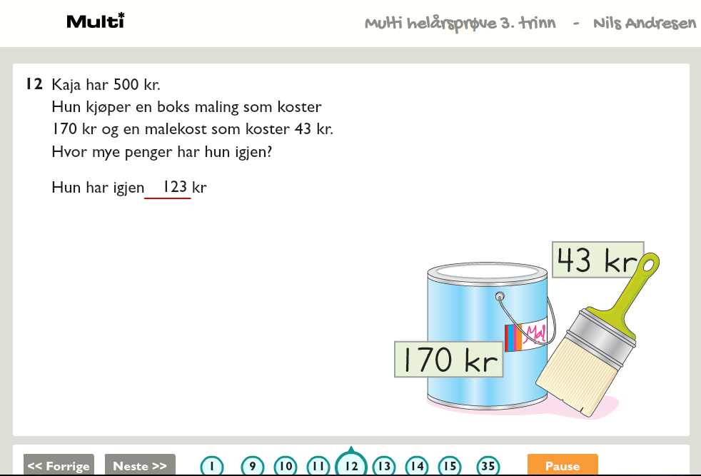
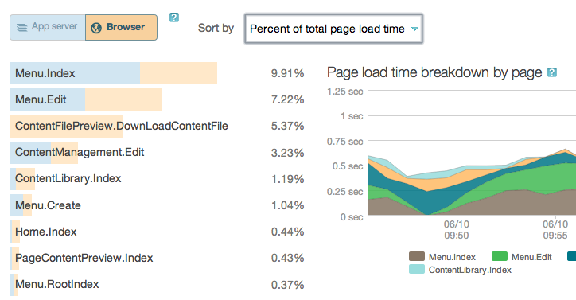
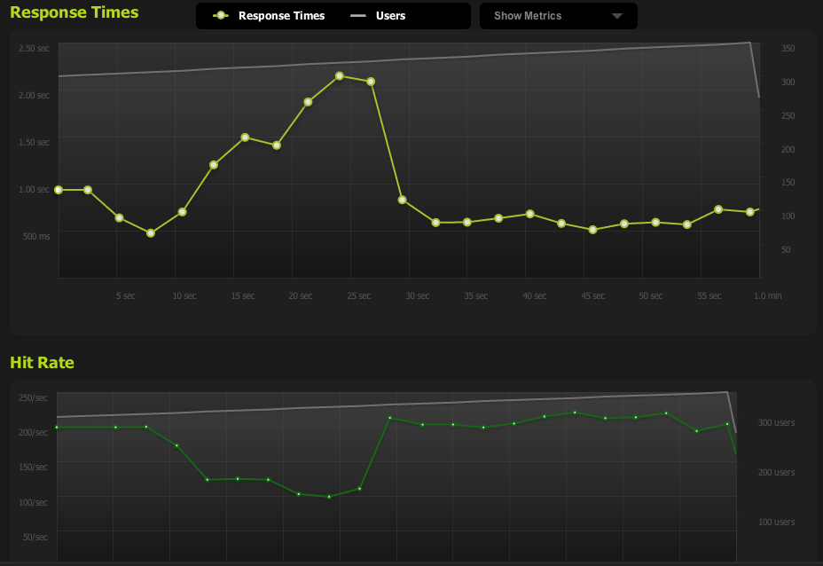
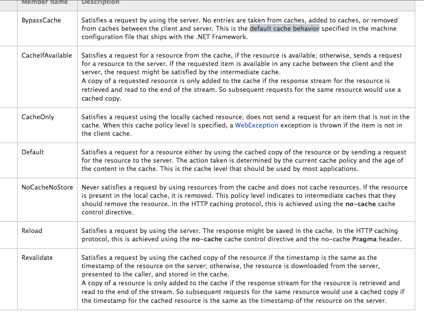

How to cope with overnight success
Scaling your web app fast and cheap
Gaute Magnussen - 12.06.2013
Gaute Magnussen
Web developer
twitter: @gautema
github: /gautema
web: http://gautema.com
email: gaute@gautema.com
slides: http://gautema.com/pres/scaling
Background
What is a scaleable system?
Scalability is the ability of a system, network, or process to handle a growing amount of work in a capable manner or its ability to be enlarged to accommodate that growth.
No silver bullet
Scaling will always have a cost
Scalability is a feature, and it requires attention
Avoid premature optimisation
and focus on macro level
- Focus on the operations that takes the most accumulated resources
- Know your domain and your users. Optimise for actual usage
- Know the code and where it hurts. Don't guess!
Where to start?
Measure
- Get a baseline
- Monitor user behaviour
- Load test
- Profile your code
NewRelic web transaction view.
Blitz.io
Short iterations, fast feedback
- Easy deployment
- Good test suite
- Find bottleneck, remove, measure, repeat
Use production data
- Real data is the best data
- Roll out changes to a subset if possible
- Compare resources usage with baseline
- Be ready to roll back
Scaling up or out?
 vs
vs
Scaling with bigger hardware
- Hardware is a quick solution
- Redesigning software is not...
Scaling with more hardware
- Smaller steps
- More infrastructure required
- License costs makes this more complex
Different cost profiles
Scaling the SQL database
- Scaling out is hard...
- Replicated read database
- Sharding and clustering
Load balancing
- Software vs Hardware
- Terminate SSL
- Reverse proxy
Using the cloud
- Works well with traffic bursts
- Some resources are hard to provision
- Easy to provision cpu and ram
- May need to port code
- More expensive side by side with buying your own
Making your code more effcient
Http cache
- Learn HTTP and it's caching mechanisms
- Long expiration date (1 year)
- Change url when the resource changes
- Use your load balancer as reverse proxy
web.config
Make content static
- Split the dynamic and static part of the page
- Merge with JS or ESI
- Cache with reverse proxy or save it as a file
CDN
- Don't host your static resources on your app server
Bundle requests
- Minimize bundle and version js
- Use css sprites
- Bundle dynamic queries
- Easier on the client and the server
- Versioning makes caching easier
Internal cache
- .NET 4.0 brought MemoryCache
- Distributed caching (AppFabric Caching, Memchached and redis)
Memorycache
using System.Runtime.Caching;
var cache = MemoryCache.Default;
var policyFactory = () => new CacheItemPolicy{SlidingExpiration = new TimeSpan(0, 0, 15, 0)};
var person = new Person("Gaute", "Magnussen");
cache.Add(person.Id, person, policyFactory.Invoke());
var cached = cache.Contains(person.Id);
var person2 = cache.Get(person.Id);
cache.Remove(person.Id);
Choosing databases
- Different databases have different sweet spots
- Mix and match in the same application
- Choose database based on usage, not old habits
Understand your databases
- Don't hide all the database features
behind a generic repository - Batch data
- Use your database's strengths
and be aware of it's weaknesses
Save your data based on usage
- In read heavy use cases, make it cheap to read
- In write heavy use cases, make it cheap to write
- Mix and match architectures in your application
- Forget about normalization
Batch your network queries
- Don't pretend memory calls and network calls are the same
- Separate request based on caching
- Leverage HTTP cache inside your application as well.
.NET default behaviour is bypassing cache
Caching behavior for WebRequest and derived classes
Put state on the client
- Avoid the Session object if possible
- If session state is needed, put it in a cache
Do slow work in the background
- Everything does not have the same priority
- Synchronicity can be faked in the UI layer
- Handles sudden bursts in traffic better
Easy Background Tasks in ASP.NET
private static CacheItemRemovedCallback OnCacheRemove = null;
protected void Application_Start(object sender, EventArgs e)
{
AddTask("DoStuff", 60);
}
private void AddTask(string name, int seconds)
{
OnCacheRemove = new CacheItemRemovedCallback(CacheItemRemoved);
HttpRuntime.Cache.Insert(name, seconds, null,
DateTime.Now.AddSeconds(seconds), Cache.NoSlidingExpiration,
CacheItemPriority.NotRemovable, OnCacheRemove);
}
public void CacheItemRemoved(string k, object v, CacheItemRemovedReason r)
{
// do stuff here if it matches our taskname, like WebRequest
// re-add our task so it recurs
AddTask(k, Convert.ToInt32(v));
}
http://blog.stackoverflow.com/2008/07/easy-background-tasks-in-aspnet/
Reject features
- Avoid cross cutting features if you can
Conclusion
- Measure
- Small iterations
- Don't stop thinking about speed
- Embrace other platforms
More?
The Issuu Ecosystem - a real life perspective on web-scale infrastructure
Jesper Holm Olsen and Martin Koch - 13 June 2013 11:40
Real World Polyglot Persistence
Jimmy Bogard - 13 June 2013 09:00
Telephones and postcards: our brave new world of messaging
Jimmy Bogard - 13 June 2013 11:40
Advanced HTTP Caching and patterns for Ninja Unicorns
Sebastien Lambla - 13 June 2013 15:00
SQL Server's Last Breath
Rob Sullivan - 13 June 2013 17:40
Questions?
twitter: @gautema
github: /gautema
web: http://gautema.com
email: gaute@gautema.com
slides: http://gautema.com/pres/scaling